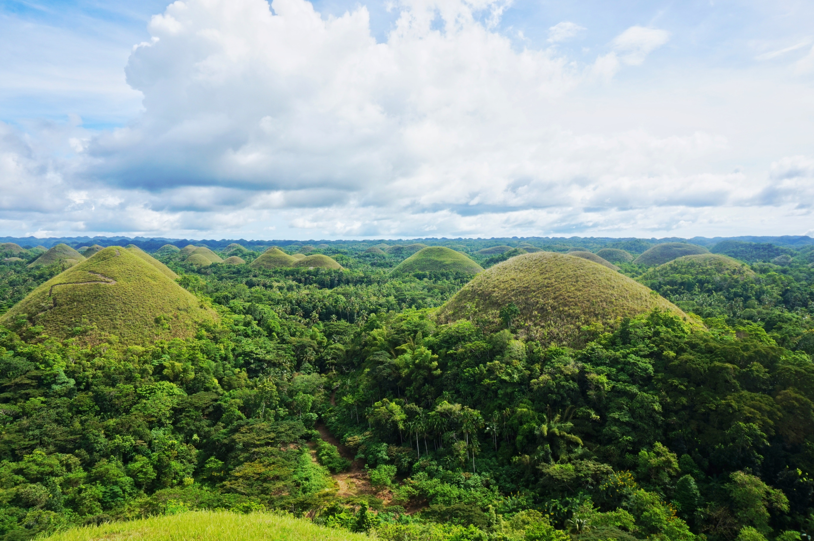
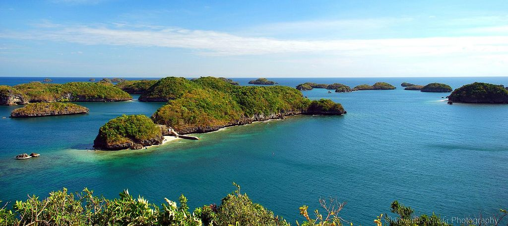

Chocolate Hills
Located on the island of Bohol. Tarsiers are also very popular in Bohol that tourists visit.

Mayon Volcano
Located in Albay Bicol Region. It's known for it's perfect cone shape

Hundred Islands
Located in Alaminos, Pangasinan.Consists of 124 islands, and 123 islands at high tide